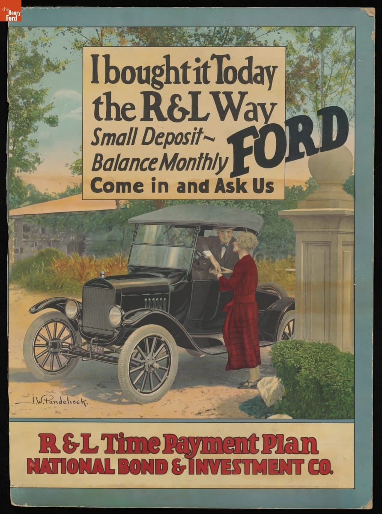

Entry 02
Journal Entry #2
The 1920s in America are often characterized as the Roaring Twenties; however, for any astute observer of history, there are obvious signs of a cracking foundation. The remnants left by the Gilded Age's rapid technological advancement and the sweltering pace of advancement through the Roaring Twenties did little to help the average worker get a larger slice of the economy. This can be observed in how, between 1922 and 1929, the manufacturing industry experienced a boom in productivity to the tune of 32 percent; however, average wages during the same period increased by a measly 8 percent.¹
During this time, personal income across industries also increased by a third, while the cost of living remained the same. This data is mostly skewed by white-collar professions experiencing rapid growth, while blue-collar professions mostly remained stagnant.² At the same time, Americans were adopting a new ethos that could only be born out of abundance; materialism picked up steam, pressuring lower-class Americans to “keep up with the Joneses.” Whether this materialism was born out of genuine ignorance of the consequences of exponential growth, the aforementioned pressure, or some other undefined variable, the solution was ultimately the same: let the credit card go brrrrr.³
Overall, the 1920s saw a boom in the consumer economy. This can be noted by the fact that, in 1929, movie theaters were drawing more than eighty million people per week.⁴

The earlier solution of allowing the middle class to take on installment plan after installment plan was only a Band-Aid on a gaping wound; it allowed consumer demand to stay up. However, by the end of the decade, two out of three radios were purchased on installment plans, demonstrating the growing materialistic ethos and the lack of financial horsepower the average American had.⁵
On October 24, 1929, one of the most famous days in United States history, investors began rapidly selling stocks in a panic, causing other investors to do the same and ultimately resulting in a massive market crash that is normally associated with the inception of the Great Depression. This crash resulted in six-sevenths of the stock market's value being butchered.⁶ However, it should be noted that the crash was not the cause of the Great Depression itself. There were likely thousands of variables that contributed to it; however, it is likely that poorly managed debt and a growing American ethos of “spend now, think later” played massive roles in what became known as the Great Depression.
Sources
Footnotes
1. The American Promise, Value Edition, Combined Volume (Macmillan Learning US, 2022), 621.
2. The American Promise, Value Edition, Combined Volume (Macmillan Learning US, 2022), 621.
3. The American Promise, Value Edition, Combined Volume (Macmillan Learning US, 2022), 622.
4. The American Promise, Value Edition, Combined Volume (Macmillan Learning US, 2022), 627.
5. The American Promise, Value Edition, Combined Volume (Macmillan Learning US, 2022), 635.
6. The American Promise, Value Edition, Combined Volume (Macmillan Learning US, 2022), 635.
Bibliography
Pondelicek, James Wallace. Ford—I Bought It Today the R&L Way. Ca. 1925. Advertising poster. The Henry Ford. Accessed October 15, 2026. https://www.thehenryford.org/collections/explore/artifact/340303.
The American Promise, Value Edition, Combined Volume. Macmillan Learning US, 2022.